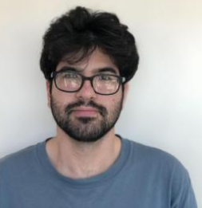
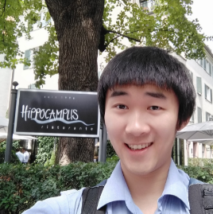
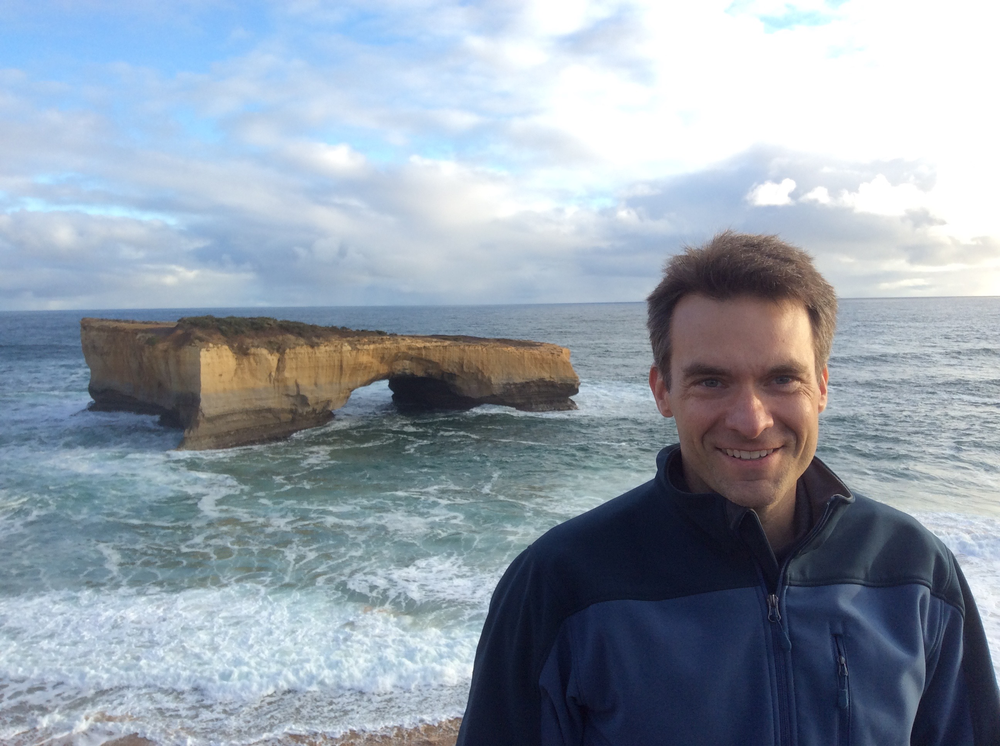
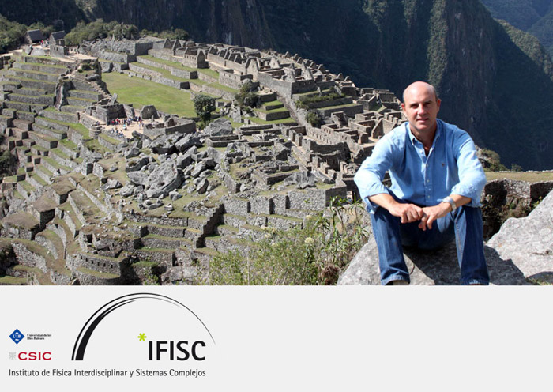

Professor Ivan Soltesz, PhD candidates Darian Hadjiabadi, and Zhenrui Liao
School of Medicine, Stanford University, USA
lab webpage
e-mail: isoltesz@stanford.edu

School of Medicine, Stanford University, USA
lab webpage
e-mail: dhh@stanford.edu

Department of Neuroscience, Columbia University, USA
lab webpage
e-mail: zl2359@columbia.edu
Professor Claudia Clopath
Bioengineering Department, Imperial College London, UK
lab webpage
e-mail: c.clopath@imperial.ac.uk
Professor William Stacey

(1) Department of Biomedical Engineering, University of Michigan, USA
(2) Department of Neurology, University of Michigan, USA
lab webpage
e-mail: wstacey@umich.edu
Professor Claudio R. Mirasso

Instituto de Física Interdisciplinar y Sistemas Complejos, Universitat de les Illes Balears, Spain
lab webpage
e-mail: claudio@ifisc.uib-csic.es
Professor Maria Neimark Geffen
Departments of Otorhinolaryngology, Neuroscience, and Neurology, University of Pennsylvania, USA
lab webpage
e-mail: mgeffen@pennmedicine.upenn.edu